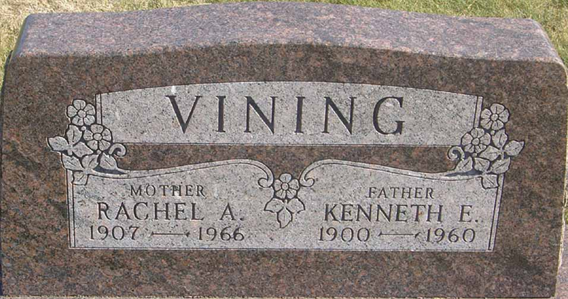

Census Data
| 1920 | 1930 | 1940 | |
| Kenneth E. Vining | 19 | 30 | 40 |
| Rachel A. ([...]) Vining | 22 | 33 | |
| Edward J. Vining | 9 | ||
| [Wi…ell] Vining | 8 | ||
| John L. Vining | 6 | ||
| Margaret A. Vining | 5 | ||
| James A. Vining | 2 |


Death Data
Headstone for Kenneth E. Vining and Rachel A. ([…]) Vining, in Green Lawn Cemetery, Perrysville, Ohio (from: Find A Grave):